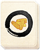
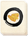

Requires
- Arts:
 

Enables
Effects
- Improves conversion to the clan religion (+2 religious zeal)
- +1 to clan-wide happiness
Description
The code of the Jesuits had much in it that the samurai could admire. Like bushido, the code emphasised obedience and loyalty to the point of death and beyond. That the Jesuits were also educated men in the arts of peace and war was an advantage too. The Word of Christianity, however, had to be spread, and there were never enough Jesuits to do it by themselves. They could only convert a few people who would then become apostolates, spreading the faith among their neighbours and friends. Experience had shown that converting a ruler, such as a daimyo, accelerated the process of conversion in an entire people, if only because men will adopt a lord's ideas in the hope of later preferment.